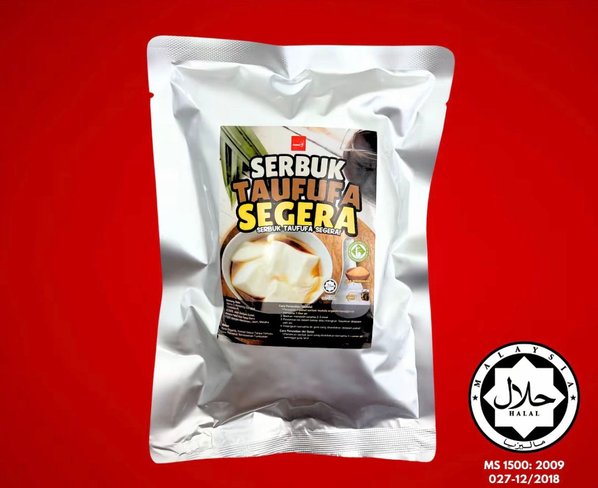
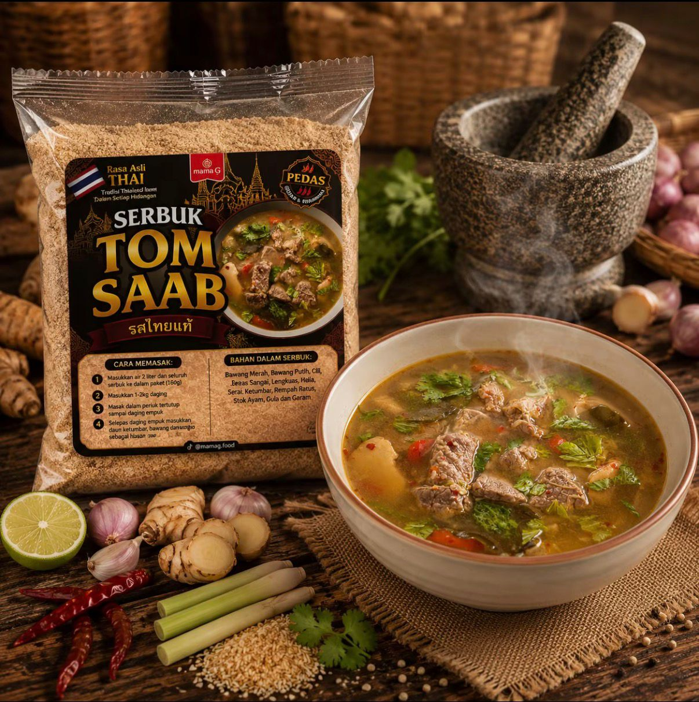

Product Gallery
Selected food products and R&D creations developed or supported through product formulation, testing, and improvement activities.

Serbuk Taufufa Segera
A food product created through formulation testing, ingredient adjustment, and quality improvement.

Serbuk Tomsaab
A product sample developed to support innovation, consumer preference, and business product improvement.

Product Development 3
A product created as part of R&D work involving testing, refinement, and product presentation.